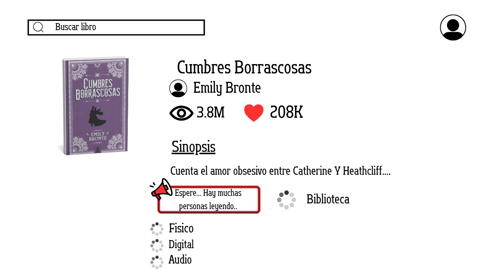

El Principito
Una historia que también llegó a la pantalla.
Descubrí libros que fueron adaptados al cine y a las series.
Una historia que también llegó a la pantalla.

Una de las obras más adaptadas de la literatura.

Una saga literaria llevada al cine.